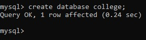
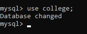
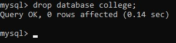
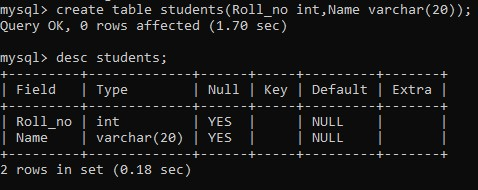
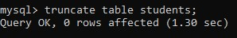

DDL ( DATA DEFINITION LANGUAGE) COMMANDS
DDL (Data Definition Language) is a set of SQL (Structured Query Language)
commands that are used to define, modify and manage the database structure.
DDL statements are used to create, alter, and delete database objects such as
tables, indexes, views, procedures, functions, and other schema objects.
1.To Create a Database(CREATE)
SYNTAX = create database databasename;
Example = create database college;

2.To Change or Enter into a Database
SYNTAX = use databasename;
Example = use college;

3.To Delete the Database(DROP)
SYNTAX = drop database databasename;
Example = drop database college;

4.To Create a Table
SYNTAX = create table tablename(columnname datatype,columnname datatype);
Example = create table students(Roll_no int,Name varchar(20);

4.To Truncate a Table
SYNTAX = truncate table tablename
Example = truncate table students;
